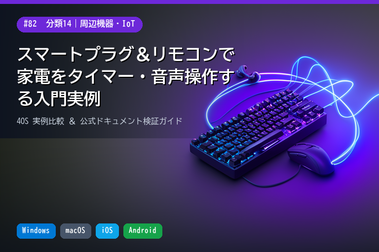

#82｜分類14: ハードウェア・周辺機器・IoT連携 2026-11-26

スマートプラグ＆リモコンで家電をタイマー・音声操作する入門実例｜Windows・macOS・iOS・Android
「スマートプラグを使って、外出先から家電の電源を切りたい」「スマホやPCから声だけで照明を操作したい」といったスマートホームの活用を検討しているものの、自分の使っているデバイス（Windows, Mac, iPhone, Android）で具体的にどう設定すればいいのか分からず、最初の一歩が踏み出せないという悩みは非常に多く聞かれます。
実は、スマートホーム機器の操作には「OSの標準機能」と「メーカー提供の専用アプリ」の使い分けを正しく理解することが重要です。この記事では、主要な4つのOS（Windows, macOS, iOS, Android）ごとに、スマートプラグやリモコンを連携させるための具体的な手順と、注意すべき制限事項を徹底解説します。
4OS比較早見表
| 機能 | Windows 11 | macOS (Ventura/Sequoia) | iOS (iPhone/iPad) | Android |
|---|---|---|---|---|
| 主な操作手段 | メーカー専用アプリ | メーカー専用アプリ | 専用アプリ / 「ホーム」アプリ | 専用アプリ / 「Google Home」 |
| 音声操作 | Edgeボイスコマンド等 | Siri (ショートカット連携) | Siri (ショートカット連携) | Google アシスタント |
| タイマー設定 | アプリ内スケジュール機能 | アプリ内スケジュール機能 | アプリ内 / ショートカット | アプリ内 / Google Home |
| 標準連携の鍵 | Wi-Fi / Bluetooth | Wi-Fi / Bluetooth | Apple Home (対応機種のみ) | Google Home (対応機種のみ) |
1. Windows 11 での実例手順
Windows環境では、スマートホーム機器を「PCの周辺機器」として直接認識させるよりも、「ネットワーク上のデバイス」として専用アプリで管理するのが基本です。
【実例手順：標準機能と公式アプリの活用】
- ペアリング・設定: まずは「Microsoft Store」またはメーカー公式サイトから専用アプリをインストールします。Windowsの設定メニューに「スマートプラグを追加」という項目はないため、必ずアプリを起動し、Wi-Fiネットワーク経由でデバイスを登録してください。
- タイマー制御: Windowsの「タスクスケジューラー」とスマートプラグを直接連携させることは標準機能では非対応です。基本的には専用アプリ内の「スケジュール機能」を使用します。手動操作を行う場合は、通知センターからアプリを素早く起動するワークフローが効率的です。
- 音声操作の実現: 現在、Cortanaは標準機能として縮小・廃止が進んでいるため、Edgeブラウザ経由のボイスコマンド機能を活用します。専用アプリのWebダッシュボードを開き、マイクアイコンを有効にして操作する手順が現実的です。
- USB-C ドッキングステーションとの連携: ドック経由で外部ディスプレイを使用している場合でも、スマートリモコン（Bluetooth/IR）をドックから引き出して使用可能です。ただし、Windowsの「設定」>「デバイス」>「Bluetooth & デバイス」でペアリング可能なのは、標準的なBluetoothプロファイルに対応したIRリモコンのみである点に注意してください。
【標準機能の制限事項】
- ローカル制御: Windows 11にはMatterやZigbeeなどのスマートホームプロトコルを直接叩く標準機能は含まれていません。専用アプリなしでの操作はできません。
- バックグラウンド動作: アプリが「省電力モード」でスリープ状態になると、通知の受け取りやタイマーのトリガーが遅延する可能性があります。
【よくあるトラブルと解決法】
- 「デバイスの追加に失敗する」
- 原因: Wi-Fiの周波数帯（2.4GHz/5GHz）の混在、または認証サーバーへの接続不安定。
- 解決策: 「設定」>「ネットワークとインターネット」でWi-Fiを2.4GHzに固定して再試行し、公式サイトの手順を厳密に確認してください。
- 「音声操作が反応しない」
- 原因: ブラウザの権限不足やマイクのミュート。
- 解決策: EdgeブラウザでWebダッシュボードを開き、「マイク」の使用許可を再度確認してください。
- 「Bluetooth リモコンが接続できない」
- 原因: ドライバー不具合またはペアリングモード未起動。
- 解決策: 「設定」>「デバイス」から一度デバイスを削除し、機器側で物理的なペアリングボタンを押しながら再試行してください。
2. macOS (Ventura / Sequoia) での実例手順
macOSでは、洗練されたUIを通じてスマートホームを操作しますが、ここでも「専用アプリの活用」が主軸となります。
【実例手順：標準機能と公式アプリの活用】
- ペアリング・設定: 「App Store」からメーカー提供のアプリをインストールします。「システム設定」>「ネットワーク」でWi-Fiに接続した状態で、アプリ内のガイドに従って機器を追加します。
- タイマー制御: アプリ内のスケジュール機能を優先的に使用します。OS標準の「ショートカット」アプリと直接連携させるには、サードパーティ製ツールが必要になる場合が多く、標準機能のみでは直接的なコマンド発行は制限ありです。
- 音声操作の実現: macOS標準の「Siri」を有効化（システム設定 > Siri & Spotlight）します。専用アプリが提供するWebサービスやショートカットへのリンクを読み込ませることで操作が可能ですが、すべての機器が対応しているわけではないため、非対応の場合は手動操作となります。
- USB-C ドッキングステーション: 接続したドックから外部キーボード/マウスを使用する場合でも、操作はトラックパッドやマウスで行います。
【標準機能の制限事項】
- Siri の連携範囲: Siriは「ショートカット」経由での起動が主であり、すべてのスマートホーム機器を直接制御するコマンドが用意されているわけではありません。
- Bluetooth 接続性: BLE（Bluetooth Low Energy）での位置情報取得は可能ですが、IRリモコン機能のペアリングには専用ドライバーが必要な場合があり、標準では非対応なケースがあります。
【よくあるトラブルと解決法】
- 「Siri がアプリを起動しない」
- 原因: Siriの権限設定不足またはショートカットへの登録漏れ。
- 解決策: 「システム設定」>「プライバシーとセキュリティ」でマイク許可を確認し、「ショートカット」アプリ内でアクションを追加してください。
- 「専用アプリがインストールできない」
- 原因: App Store以外のソースからのダウンロード制限。
- 解決策: 原則としてApp Store経由を推奨しますが、公式サイトのPKGファイル等を使う場合は「プライバシーとセキュリティ」で許可設定が必要です。
- 「Bluetooth リモコンが見つからない」
- 原因: スキャン範囲外またはペアリングモード未起動。
- 解決策: 「システム設定」>「Bluetooth」で機器が検出されるまで待機し、見つかったらクリックしてパスワードを入力してください。
3. iOS (iPhone / iPad) での実例手順
モバイルデバイスはスマートホーム操作の司令塔です。ここでは「Apple Home（ホーム）」アプリとの親和性が鍵となります。
【実例手順：標準機能と公式アプリの活用】
- ペアリング・設定: App Storeから専用アプリをインストールし、Wi-Fi接続環境で機器を追加します。Bluetoothは位置情報の確認や一部のIRリモコン用として利用されます。
- タイマー制御: アプリ内のスケジュール機能をメインに使用します。標準機能の「ショートカット」アプリと連携させることで、「特定のアクションを起動する」といった自動化が可能ですが、スマートプラグ自体への直接コマンド発行は専用アプリ経由が必須となります。
- 音声操作の実現: iOS標準の「Siri」を使用します。「ショートカット」アプリ内でSiriコマンドを設定し、「『照明をつける』と一言で言う」といった連携を行います（対応機器のみ）。
【標準機能の制限事項】
- ホームKit (Home) の依存: 多くの製品はApple Homeアプリとの公式連携が必要ですが、すべてのメーカーが対応しているわけではありません。非対応の場合は専用アプリでの操作に限定されます。
- Bluetooth 接続性: iOSではIRリモコン機能を持つデバイスの直接制御には標準機能では不可能であり、専用アプリが必要です。
【よくあるトラブルと解決法】
- 「Siri コマンドが認識されない」
- 原因: ショートカットへの登録漏れまたは権限不足。
- 解決策: 「設定」>「プライバシーとセキュリティ」で許可を確認し、ショートカットアプリ内でアクションを紐付け直してください。
- 「専用アプリがインストールできない」
- 原因: App Storeの制限や開発者証明書の問題。
- 解決策: 原則としてApp Store経由を推奨します。
- 「Bluetooth リモコンが見つからない」
- 原因: スキャン範囲外またはペアリングモード未起動。
- 解決策: 「設定」>「Bluetooth」で機器が検出されるまで待機し、タップしてパスワードを入力してください。
4. Android (Pixel / Galaxy など) での実例手順
AndroidではGoogle Homeとの統合が最もスムーズな操作体験を生み出します。
【実例手順：標準機能と公式アプリの活用】
- ペアリング・設定: Google Playストアから専用アプリをインストールします。Wi-Fi接続後、アプリ内で機器を追加します（Bluetoothは位置確認や一部のIRリモコン用）。
- タイマー制御: アプリ内のスケジュール機能を使用します。Google Homeアプリと連携できる製品であれば、Google Home側のルーチン機能を使って高度な自動化が可能です。
- 音声操作の実現: 「Google アシスタント」を使用します。専用アプリ側でGoogle Homeとの連携を許可することで、「OK Google, 電源をつけて」といった自然な音声操作が可能になります。
【標準機能の制限事項】
- メーカー依存: 多くのスマートホーム製品はGoogle Homeとの公式連携が必要ですが、すべてのメーカーが対応しているわけではありません。非対応の場合は専用アプリのみでの操作となります。
- Bluetooth 接続性: AndroidもIRリモコン機能を持つデバイスの直接制御には標準機能では不可能であり、専用アプリが必要です。
【よくあるトラブルと解決法】
- 「Google アシスタントが反応しない」
- 原因: Google Homeとのアカウント連携未完了。
- 解決策: 専用アプリの設定画面から「Google Homeにリンク」等の項目を探し、認証を完了させてください。
- 「専用アプリがインストールできない」
- 原因: Playストアの地域制限や互換性問題。
- 解決策: 公式サイトからAPKを直接入れることはセキュリティ上非推奨ですが、Playストアで「互換性なし」と出る場合はデバイスのOSバージョンを確認してください。
- 「Bluetooth リモコンが見つからない」
- 原因: ペアリングモード未起動または他デバイスとの接続中。
- 解決策: 機器側のペアリングボタンを長押しし、AndroidのBluetooth設定画面で再スキャンしてください。
よくあるトラブルと解決チェックリスト
スマートホーム構築時によく遭遇するエラーへのクイック対処法です。
| エラー内容 | 推定原因 | 対処法 |
|---|---|---|
| デバイスの追加に失敗する | Wi-Fi周波数（2.4GHz/5GHz）の混在 | 設定からWi-Fiを2.4GHzに固定して再試行。多くのスマートプラグは2.4GHz専用です。 |
| 音声操作が反応しない | アプリの権限不足または連携未完了 | OSの設定で「マイク」の許可を確認し、Google HomeやSiriとのアカウント連携を再確認してください。 |
| Bluetoothリモコンが繋がらない | ペアリングモードの未起動 | 機器側の物理ボタンを押してペアリング状態（LED点滅など）になっているか確認してください。 |
| タイマーが動かない | アプリのバックグラウンド制限 | OSの「省電力設定」で、スマートホームアプリを例外として許可してください。 |
まとめ：快適なマルチOS環境を作るポイント
スマートプラグやリモコンを活用した自動化は、一度設定してしまえば日々の生活を劇的に便利にします。しかし、今回解説した通り、「各OSの標準機能だけで完結するわけではなく、メーカーアプリとの橋渡しが必要」という点が共通のルールです。
快適なマルチOS環境（例えばWindowsでの仕事とiOSでのプライベートなど）を構築する際は、以下の周辺機器も併せて検討すると、よりシームレスな操作感を実現できます。
- USB-C ドッキングステーション: PC周りの配線を一本にまとめつつ、ドック経由でスマートリモコンや外部ディスプレイを安定して接続できます。
- KVM切替器: 1台のPCからWindowsとMacの両方を操作する場合、キーボードやマウスを共有しながら、それぞれのOSでのスマートホームアプリ操作をスムーズに行えます。
- マルチペアリングキーボード・マウス: 複数のデバイスをボタン一つで切り替えられるため、スマホ（iOS/Android）とPCの間を行き来しながらの家電操作が非常にスムーズになります。
まずは身近なスマートプラグから、お好みのOSに合わせて設定を始めてみましょう！
参考文献・公式ドキュメント（一次情報ソース）
本記事の手順・仕様は以下の各OSおよびツールの公式ドキュメントに基づいています。OSアップデートによりメニュー名称や挙動が変わる場合があるため、最新仕様の確認にもご活用ください。